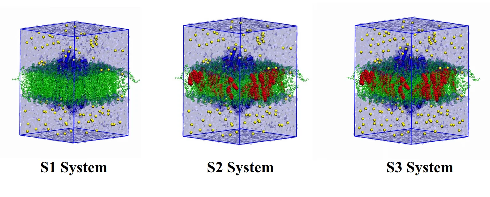
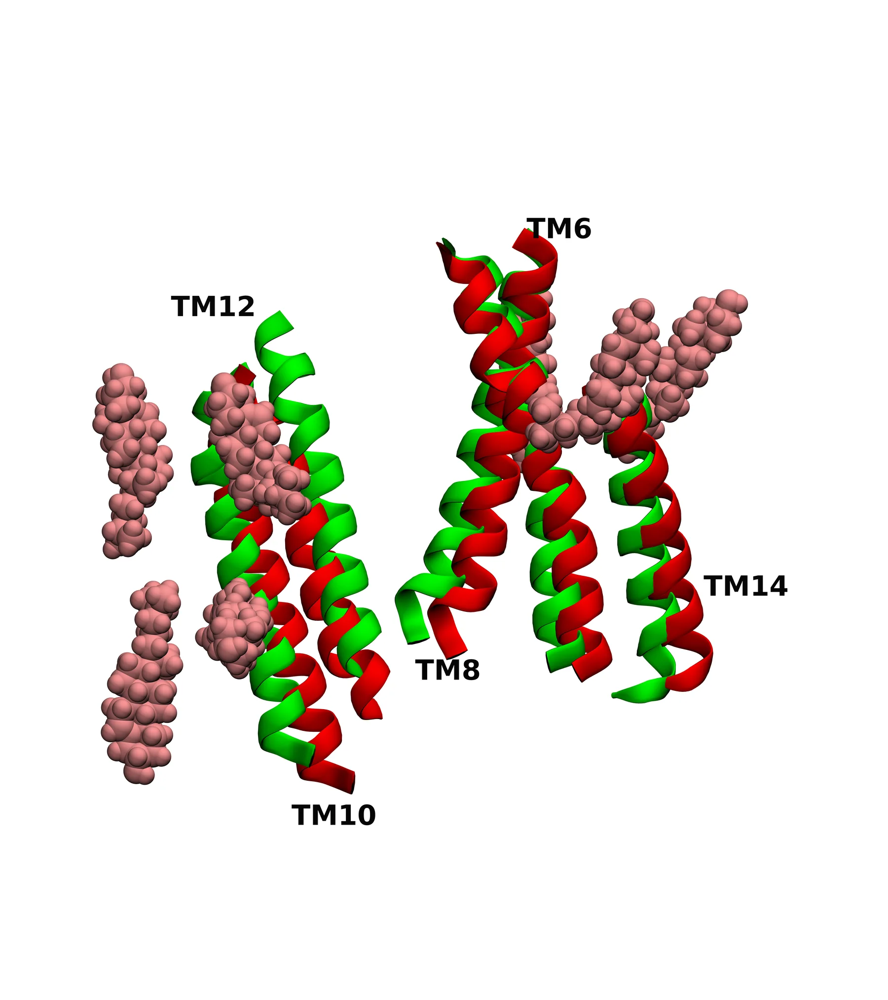
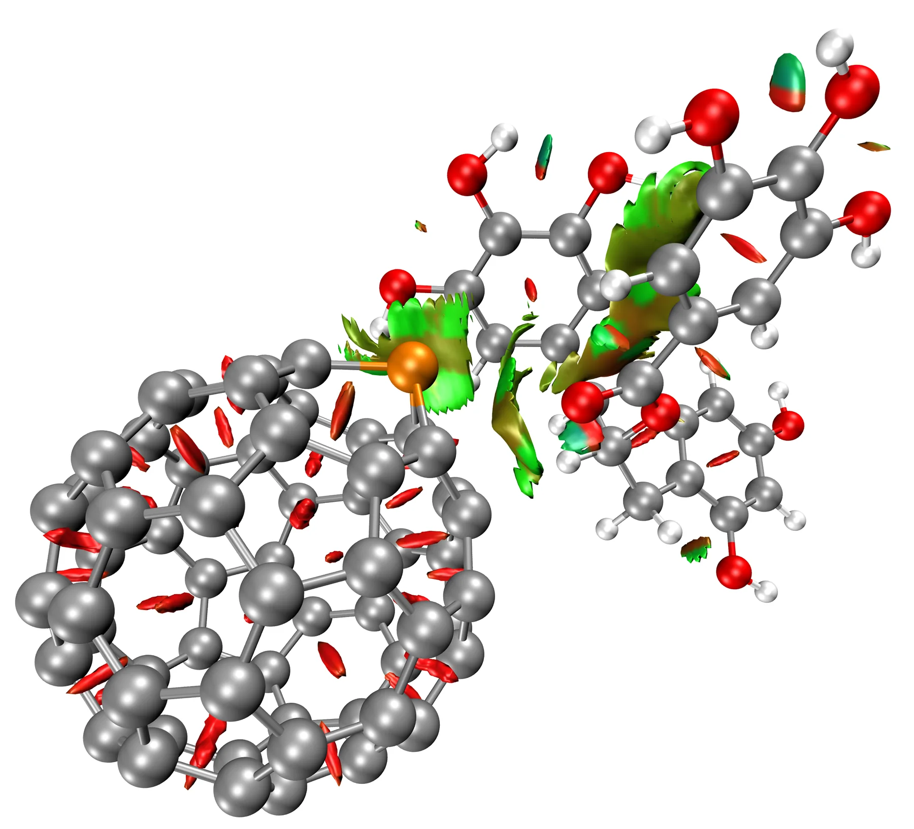
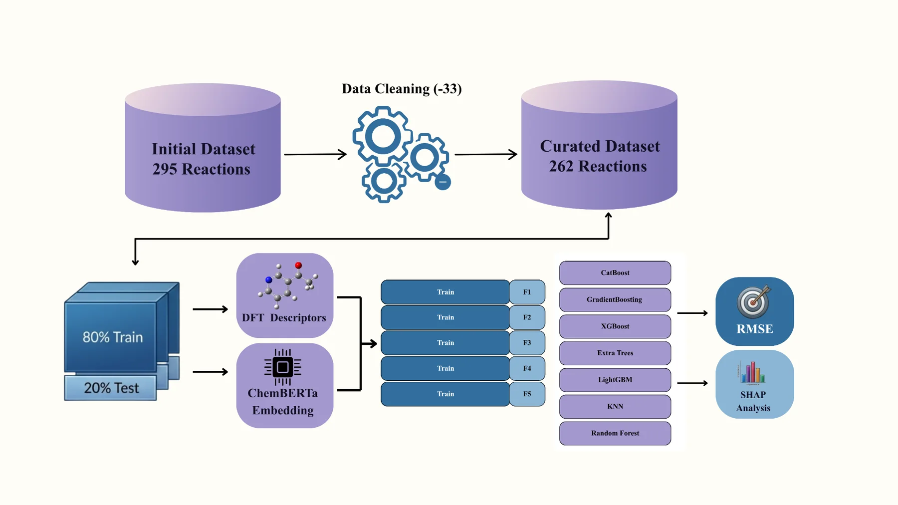
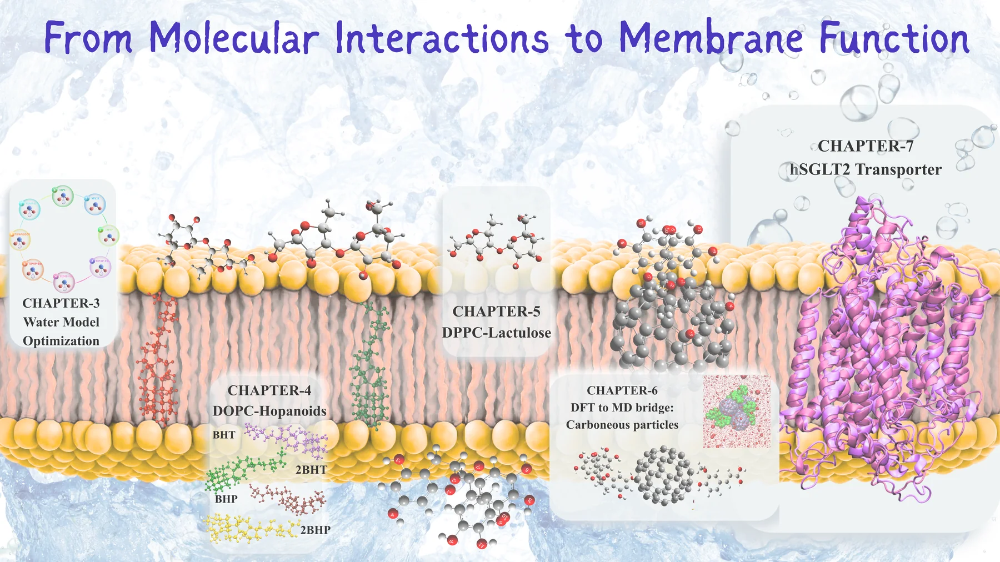
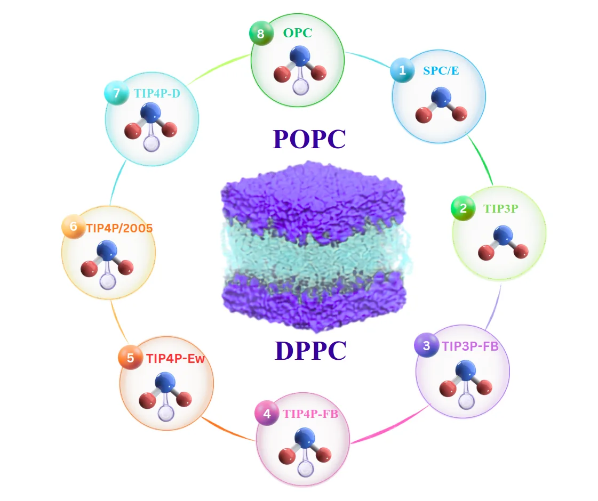
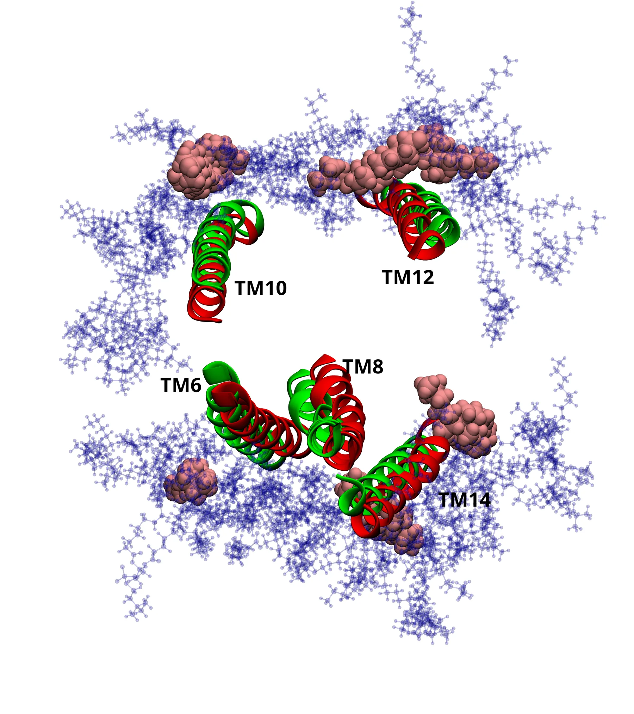
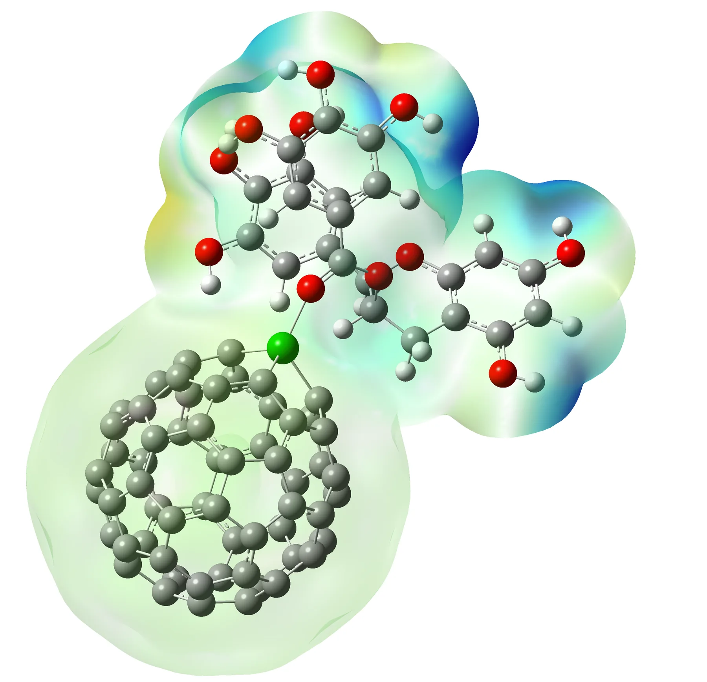
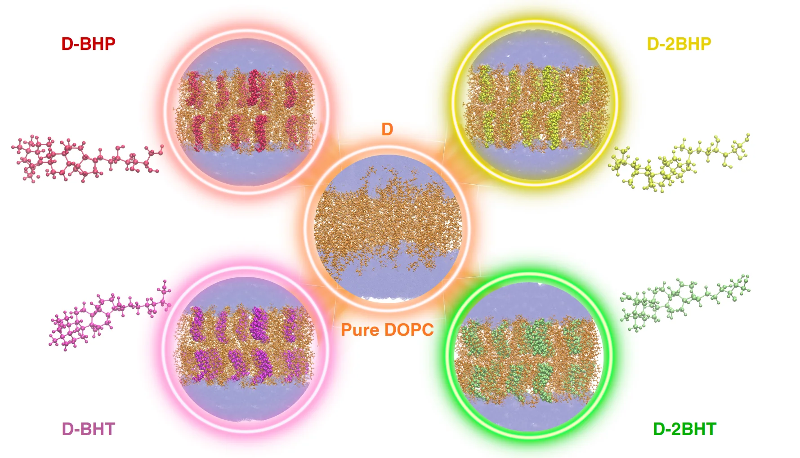

Membrane Biophysics
Atomistic MD of phosphatidylcholine bilayers, lipid packing, membrane organization and interfacial coupling.
POPCDPPCDOPC
Molecular Dynamics · DFT · Machine Learning
I use atomistic simulation, electronic-structure calculations and data-driven models to understand molecular interactions — from hydrated lipid interfaces and membrane proteins to functional nanomaterials and chemical selectivity.




Research profile
My research connects atomistic membrane simulations, microscopic water dynamics, membrane proteins, electronic-structure theory and data-driven chemical modelling.
Atomistic MD of phosphatidylcholine bilayers, lipid packing, membrane organization and interfacial coupling.
Benchmarking AMBER Lipid14/Lipid21 with explicit water models across structural, interfacial and dynamical observables.
Custom trajectory-analysis workflows for hydration shells, hydrogen bonding, tetrahedral organization, translational motion, residence and orientational relaxation.
Human SGLT2 in defined membrane environments, cholesterol coupling, transmembrane dynamics and internal water accessibility.
Electronic structure, adsorption, charge redistribution and molecular sensing in pristine and heteroatom-doped nanomaterials.
Physics-informed molecular descriptors, transformer-derived molecular representations, regression models and interpretable ML for chemical selectivity.
Doctoral thesis
Ph.D. in Theoretical & Computational Chemistry · Central University of Punjab · thesis submitted and under evaluation.
All-atom molecular dynamics supported by density functional theory to connect membrane composition, hydration, molecular recognition and transporter dynamics.

AMBER Lipid21/Lipid14 + explicit water-model benchmarking in phosphatidylcholine bilayers.
How BHT, 2BHT, BHP and 2BHP reorganize DOPC and alter hydration-shell structure, residence and water reorientation.
Concentration-dependent membrane reorganization with microscopic analysis of interfacial-water structure, translation, residence and orientational dynamics.
DFT of pristine/doped C60 with ferulic acid and EGCG, bridged to explicit-membrane MD.
Cholesterol-dependent transporter stability, lipid coupling and persistent internal hydration.
Machine learning
An ongoing workflow for organosilane-mediated carbonyl reductions that connects quantum-chemical descriptors, molecular representations and interpretable predictive modelling. Numerical performance results are intentionally not displayed here.
Carbonyl substrates, organosilanes, ligand / metal environments and reaction conditions.
Electronic, geometric, steric and physicochemical molecular descriptors.
SMILES-based transformer representations combined with the physics-informed descriptor space.
Linear, neighbour-based, tree-ensemble and gradient-boosting regression families.
Feature-attribution analysis to connect learned patterns back to chemically meaningful variables.
The study uses chemically resolved reaction components, DFT-derived descriptors and learned molecular representations inside a controlled machine-learning pipeline. The emphasis here is on the methodological design rather than unpublished numerical results.
Selected research
Selected systems spanning membrane-model validation, membrane proteins, electronic structure, membrane remodeling and microscopic hydration dynamics.

Systematic comparison of phosphatidylcholine bilayers under AMBER Lipid21 and Lipid14 using multiple explicit-water descriptions.

All-atom simulations resolve transporter drift, individual transmembrane-region behavior, cholesterol localization, lipid ordering and water accessibility.

Pristine and heteroatom-doped C60 systems studied with DFT to quantify adsorption, electronic response, orbital modulation and interaction character.

Comparative MD separates hopanoid-driven membrane remodeling from the microscopic response of interfacial water. Custom trajectory-analysis workflows probe hydration-shell structure, tetrahedral organization, hydrogen bonding, translational motion, residence times and orientational relaxation.
Publications & manuscripts
28 research outputs in the current portfolio: peer-reviewed papers, preprint / revision-stage manuscripts, submitted manuscripts and work in preparation.
Singh, P. P.†; Dey, C.†; Dhal, B.; Muduli, S. B.; Chakraborty, S. †Equal contribution.
Singh, P. P.†; Dey, C.†; Raphel, A.; Mohammed, F.; Chakraborty, S. †Equal contribution.
Dey, C.†; Singh, P. P.†; Chakraborty, S. †Equal contribution.
Thomas, J.†; Das, A.†; Singh, P. P.†; Kaur, J.; Kumar, A.; Chakraborty, S.; Jaitak, V. †Equal contribution.
Dey, C.†; Singh, P. P.†; Chinyoti, K.; Robins, R.; Chakraborty, S. †Equal contribution.
Chanda, M.; Gangwar, A.; Das, A.; Singh, P. P.; Chakraborty, S.; Jaitak, V.
Kumar, A.; Purohit, N.; Singh, P. P.; Jangid, K.; Kumar, V.; Bharat, J. S.; Chakraborty, S.; Kumar, V.; Jaitak, V.
Das, A.; Sarangi, M.; Jangid, K.; Kumar, V.; Kumar, A.; Singh, P. P.; Kaur, K.; Kumar, V.; Chakraborty, S.; Jaitak, V.
Kumar, V.; Singh, P. P.; Dwivedi, A. R.; Kumar, N.; Kumar, R.; Sahoo, S. C.; Chakraborty, S.; Kumar, V.
Kumar, R.†; Dutta, S.†; Sharma, V.; Singh, P. P.; Gonnade, R. G.; Koley, D.; Sen, S. S. †Equal contribution (Kumar and Dutta).
Singh, P. P.; Dey, C.; Kaur, J.; Chakraborty, S.
Singh, P. P.†; Kaur, J.†; Jakhar, M.; V. C., S.; Dey, C.; Thakran, K.; Chakraborty, S. †Equal contribution.
Dey, C.†; Singh, P. P.†; James, D.; Chakraborty, S. †Equal contribution.
Sahu, P.†; Singh, P. P.†; Kumar, A.; Chakraborty, S.; Munshi, A. †Equal contribution.
Ghosh, N.; Singh, P. P.; Sharma, A.; Bhattacharya, M.; Chakraborty, S.
Singh, P. P.; Kumar, A.; Dey, C.; Thakran, K.; Chakraborty, S.
Singh, P. P.; Kumar, B.; Dey, C.; Thakran, K.; Chakraborty, S.
Singh, P. P.; Laha, P. S.; Dey, C.; Thakran, K.; Chakraborty, S.
Singh, P. P.; Dey, C.; Chakraborty, S.
Singh, P. P.; Dey, C.; Berlin, N.; Chakraborty, S.
Singh, P. P.; Dey, C.; Chakraborty, S.
Singh, P. P.; Dey, C.; Chakraborty, S.
Singh, P. P.; Dey, C.; Chakraborty, S.
Singh, P. P.; Dey, C.; Chakraborty, S.
Singh, P. P.; Kumari, D.; Dey, C.; Chakraborty, S.
Singh, R.†; Singh, P. P.†; Prashar, V.; Arora, T.; Chakraborty, S.; Sharma, A.; Parkash, J. †Equal contribution.
Dixit, V.; Kalsi, A. S.; Prajapati, V.; Singh, P. P.; Chakraborty, S.; Singh, A. K.; Kumar, P.
Kalra, S.†; Singh, P. P.†; Bari, V. K.; Chakraborty, S. †Equal contribution.
No matching research output found.
Academic milestones
Competitive fellowships and examinations, teaching experience, conference presentations, specialist training, team-sport achievements, early academic competitions and academic service that complement my research record.
Chemical Sciences · Awarded December 2019
Qualified in both 2019 and 2020.
Qualified in 2017.
Physics, Chemistry & Mathematics · Qualified in 2013 and 2014.
Teaching experience
Department of Computational Sciences, Central University of Punjab, Bathinda. Assisted with introductory DFT teaching, tutorial discussions and student support as part of doctoral teaching responsibilities.
Awards & recognition
Chemical Society, Department of Chemistry, The Maharaja Sayajirao University of Baroda. Cricket team captain and winner in 2016–2017; subsequent winner in both cricket and football during 2017–2018.
Academic service
Central University of Punjab · Six months of administrative coordination, including contributions to drafting the mess constitution and operational guidelines.
Conferences, symposia & workshops
Poster and oral presentations across theoretical chemistry, molecular simulation and interdisciplinary science, together with focused training in DFT and machine learning.
Poster presentation · 2–5 December 2025
Poster presentation · 4–6 December 2024
Poster presentation · 26–29 February 2024
Two-day workshop · 12–13 March 2024
In-person hands-on workshop · 13–16 February 2023
Poster presentation · 15 October 2022
Oral presentation: “Mechanistic Investigation of Amine Formation via In Silico Approach” · 11 May 2022
Selected certificates
Click a certificate to view it at full size.
Sports record
Presented as team results rather than individual “first position” labels: cricket winner and team captain in 2016–2017, followed by winning performances in both cricket and football during 2017–2018.
About
My research training spans atomistic molecular simulation, membrane biophysics, microscopic water dynamics, electronic-structure theory and data-driven chemical modelling.
I develop and use trajectory-analysis workflows to resolve hydration structure and water dynamics at molecular interfaces, alongside molecular dynamics, DFT and physics-informed machine learning. I am particularly interested in problems where molecular-level computation can explain experimentally measurable behavior and extend that understanding toward prediction.
GROMACS · CHARMM-GUI · custom trajectory analysis · VMD · PyMOL
Gaussian · ORCA · Multiwfn · VASP · Quantum ESPRESSO
Python · NumPy · SciPy · scikit-learn · TensorFlow · PyTorch · ChemBERTa · SHAP
Linux · Bash · SLURM · Fortran · LaTeX · gnuplot · Grace
Contact